Projects
Circles Image Evolver
Image to circles
 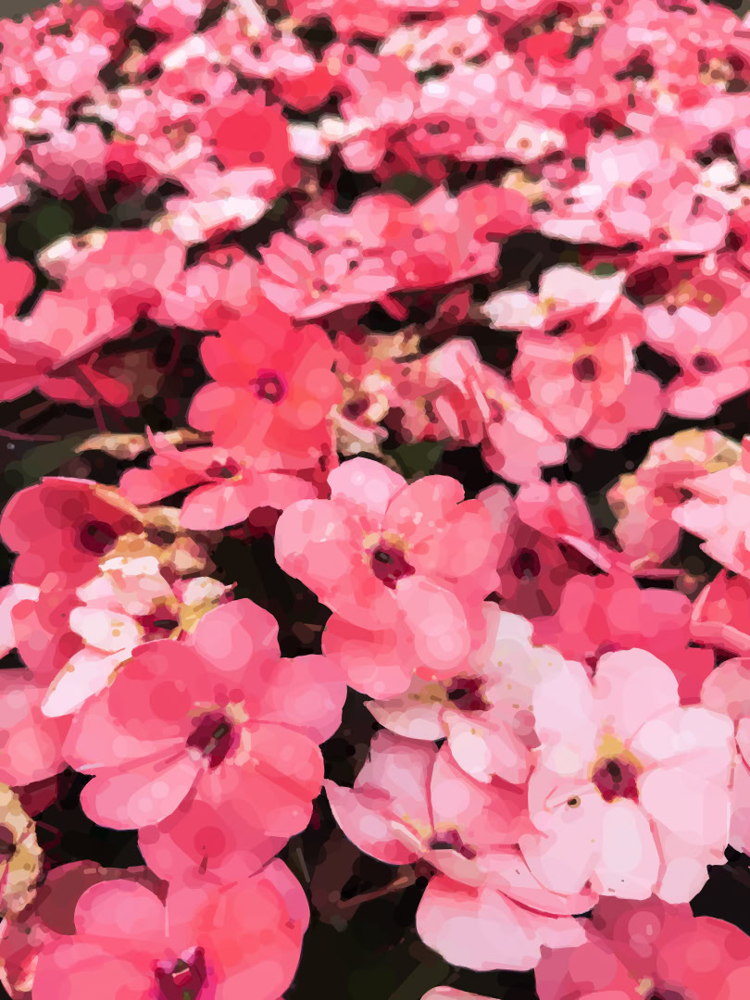
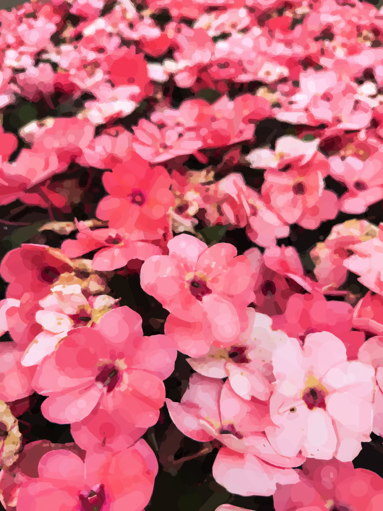


Using the GPU, takes an input image and slowly evolves a circle-based representation. Gives off a painted, dream-like feel.
Does not use stable diffusion technology.
Digital Rain
Calming matrix screensaver
Designed to give off the feeling of falling rain.
Guide
Dynamic game advisor
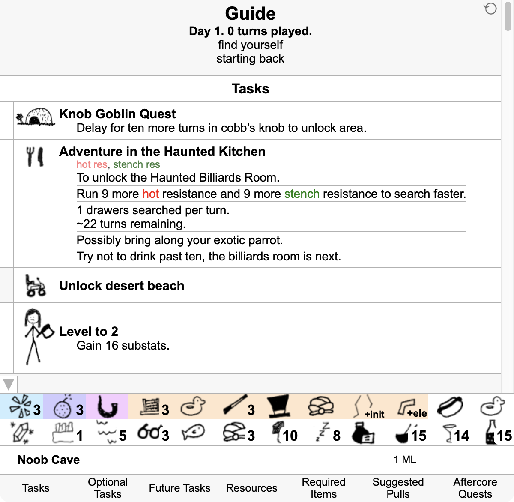In-browser add-on that continually gives advice on how to play the online video game, Kingdom of Loathing. An automatic task list that responds to the user's current situation.
Destiny Ascension
AI game player
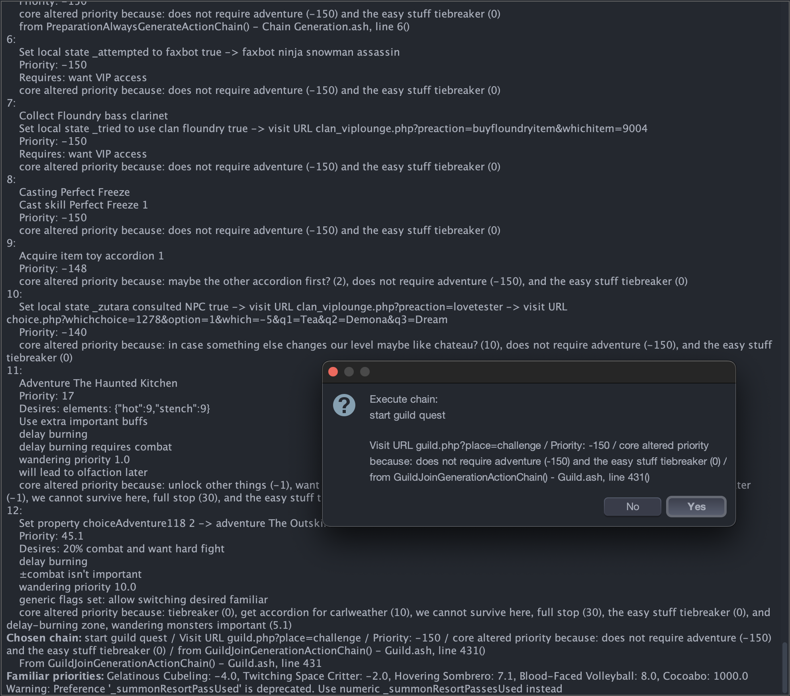Automatically plays through a single ascension of the online video game, Kingdom of Loathing, as efficiency as possible. Has won first place in-game on three occasions.
Run loop:
- Generate a list of every single useful action possible at this moment. How to execute the action, what the action requires, metadata.
- Apply a large set of heuristics to alter the priority of all actions. Does this need to be done now, or would be better later?
- Select highest priority action, prepare, execute, then loop again.
Landscapes
OpenGL playground
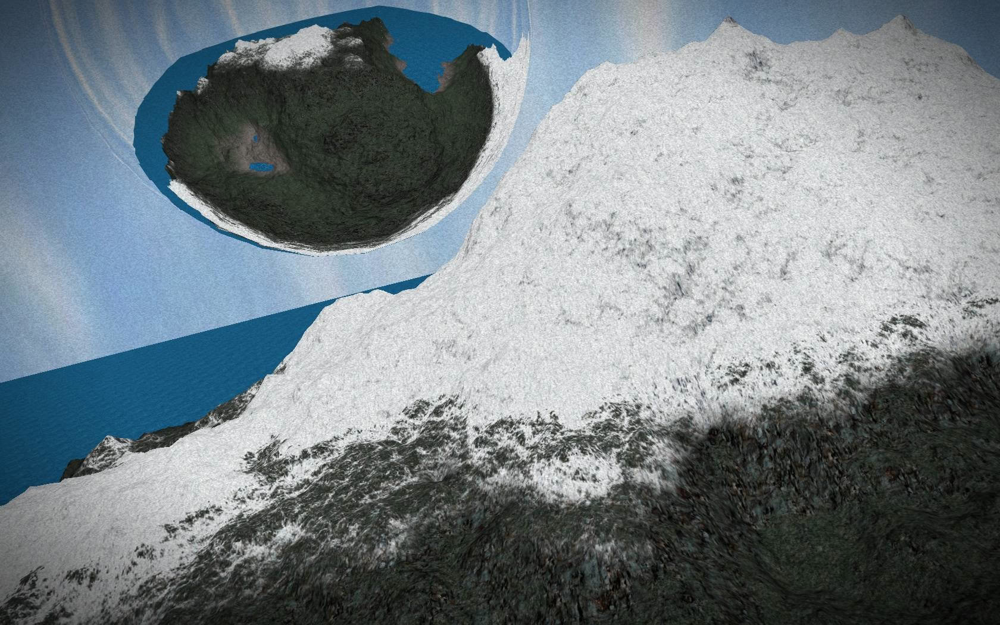
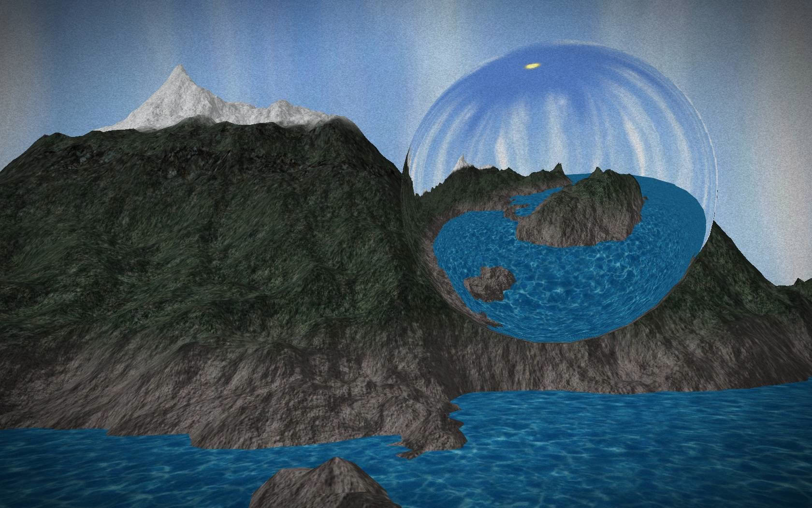


Two separate projects for trying various OpenGL concepts. Generated terrain, motion blur, summed area tables, real-time spherical reflections, quad trees, and shadow mapping.
Dust
Gravity particle simulator
Interactive, simulates gravity applied to particles.
Other Scripts
Various in-game add-ons
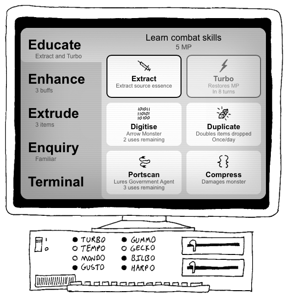
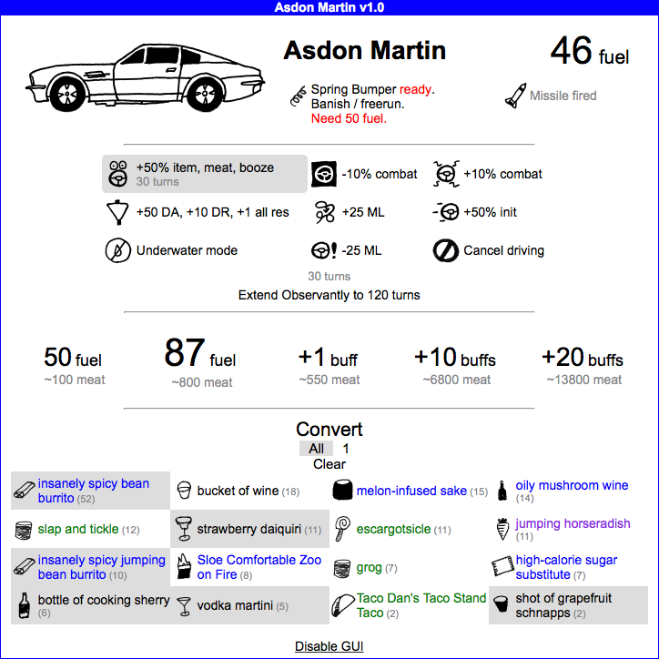
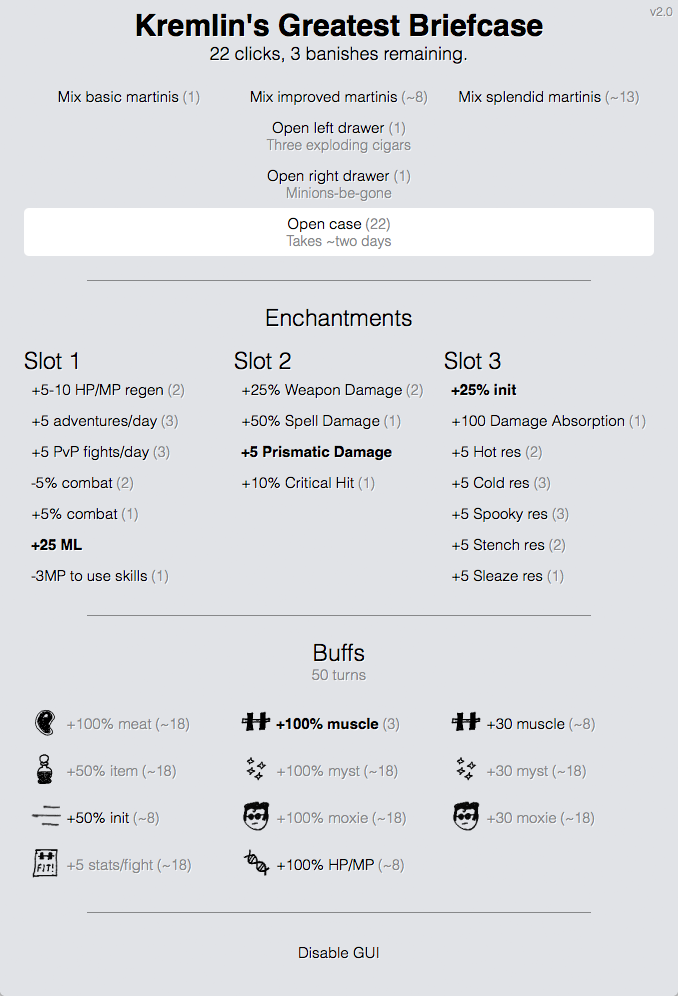
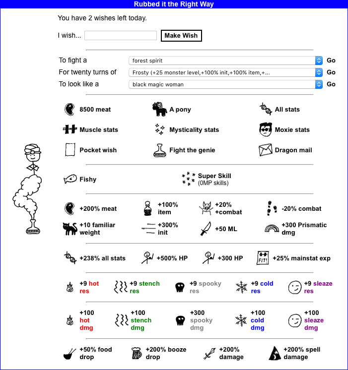
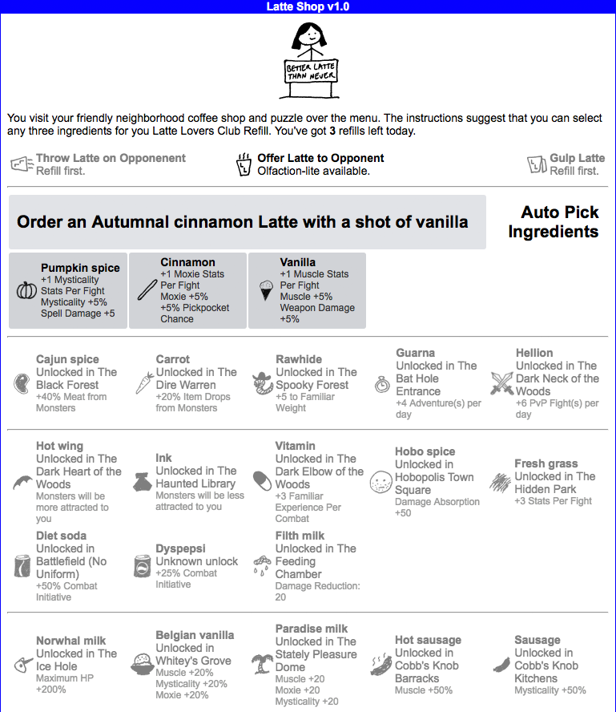
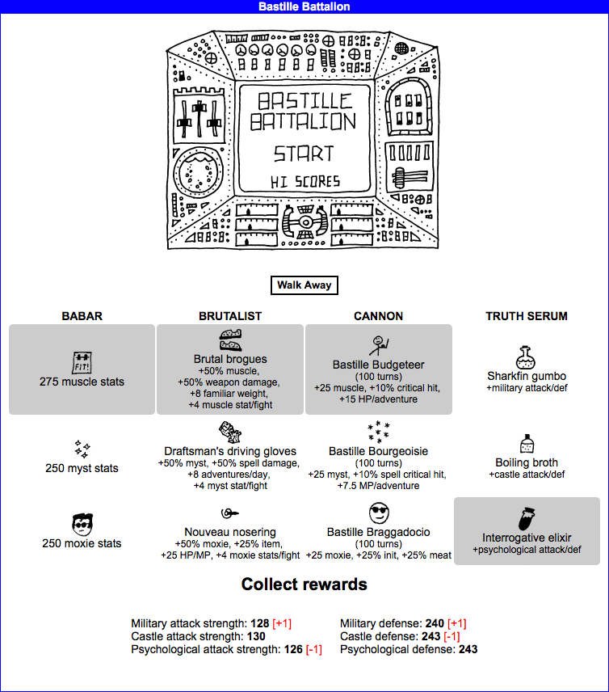
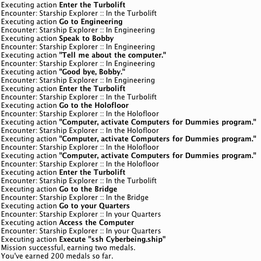
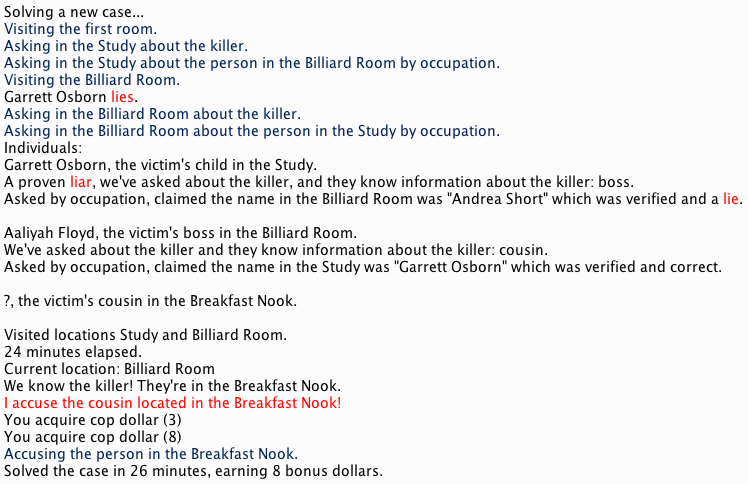
Game mods designed to improve quality of life for Kingdom of Loathing players. Some offer interactive GUIs for difficult-to-use in-game items, others play sections of the game automatically.